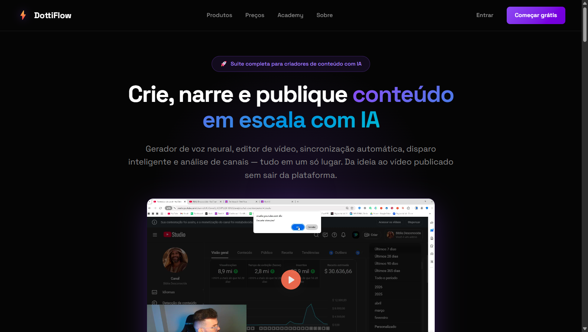
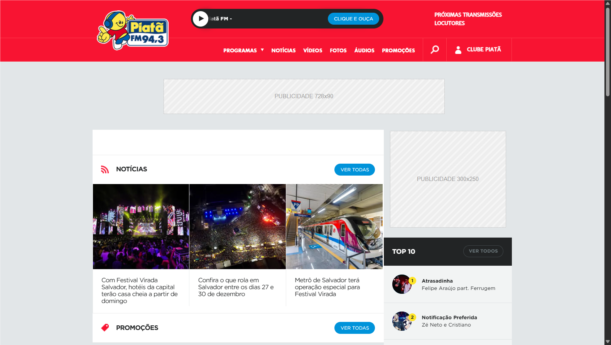
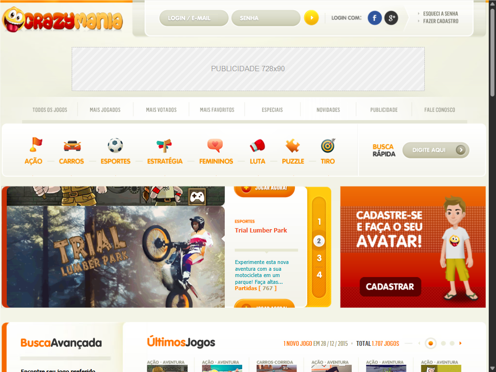

no ar desde 2000
Vinte e seis anos no ar.
Sou Tiago Ferreira. Construo produtos digitais que precisam funcionar todo dia — hoje, agentes de inteligência artificial atendendo clientes reais; em 2000, um dos primeiros portais de jogos do Brasil. Role para baixo: o site envelhece junto comigo.
DottiVideo
Você manda um áudio e um título. O sistema devolve um vídeo pronto — montado inteiro por IA: transcrição, direção de arte, escolha das imagens, edição, trilha e renderização na nuvem.
O difícil: uma camada de visão computacional que "olha" cada imagem antes de publicar e barra o que não presta — foto fora do tema, texto queimado, conteúdo impróprio. Mais uma fazenda de renderização processando vídeos em paralelo, com custo e margem controlados por vídeo. Não é coisa que se monta num fim de semana.
- centenas de modelos de cena
- render serverless em paralelo
- visão computacional em produção
DottiFlow
Plataforma de assinatura que reúne, numa conta só, um conjunto de ferramentas de IA e produtos — extensões de navegador, aplicativo de desktop e apps web.
O difícil: não é a tela bonita — é o que sustenta ela. Cobrança recorrente, licenciamento por produto e por dispositivo, e o antifraude que impede compartilhamento indevido de conta. Manter centenas de pessoas pagando e dependendo do produto funcionar todo santo dia é uma escola que curso nenhum dá.
- centenas de clientes pagantes
- licenciamento + antifraude
- ferramentas de IA próprias

Techflip Networks
Minha base há mais de 15 anos. Começou com desenvolvimento e hospedagem de sites e foi evoluindo junto com a tecnologia. Hoje é onde eu construo o TECHFLIP AI: uma plataforma de agentes de IA que atende, vende, agenda e cobra sozinha.
O difícil: isso não é "plugar o ChatGPT no WhatsApp". A maior parte do meu tempo foi construindo as travas que impedem a IA de inventar informação, entrar em loop ou tomar uma decisão errada que mexe no dado do cliente — um segundo modelo revisando cada resposta antes de enviar, regras rígidas para as decisões críticas (confirmar, cancelar, cobrar) e isolamento seguro entre clientes. O resultado é uma IA em que dá pra confiar em produção — não uma demo que quebra no primeiro caso fora do script.
- agentes de IA em produção
- clientes pagantes
- multi-tenant + segurança
Rádio Piatã FM
Repensei e reconstruí toda a presença digital da rádio, juntando tecnologia e marketing. Aqui o resultado apareceu no número — que é o que interessa.
- visitas/dia: 700 → 8.000
- pageviews/mês: 150 mil → 2,4 milhões

CrazyMania
Aqui começa tudo. Criei um dos primeiros portais de jogos em Flash do Brasil, quando quase ninguém no país apostava na internet. Virou referência da categoria. Em 2014 liderei o relançamento da plataforma com a equipe.
Vinte e seis anos atrás eu já fazia a mesma coisa que faço hoje: pegar uma ideia e transformá-la em algo que milhares de pessoas usam. Só mudou a tecnologia.
- 25.000 visitas únicas/dia
- 1º no Google em "jogos online"
- +1.600 jogos no catálogo

fim da linha do tempo
Até aqui foi a história — o que eu construí, e quando. O que vem a seguir não tem ano: é a ficha técnica. Tudo o que eu sei fazer, sem enfeite.
↓ ↓ ↓
Competências técnicas
// tudo abaixo é coisa que eu construí e coloquei em produção — não é lista de curso.
// em verde, o que quase ninguém sabe fazer.
- IA aplicada · agentes
- Arquitetura de agente modular Tool use com schema validado Anti-alucinação em camadas LLM-as-Judge Handlers determinísticos LoopGuard State machine determinística Roteamento por custo/qualidade Prompt engineering Anthropic Claude Groq
- Confiabilidade de IA
- Suíte de evals (golden + pass-rate gate) Observabilidade de IA Telemetria de alucinação/escalação Defesa contra prompt injection (2ª ordem) Cotas e rate-limiting Cache de prompt Circuit breakers
- IA generativa · mídia
- Geração programática de vídeo (Remotion) ~560 modelos de cena versionados Direção de arte automática por LLM ffmpeg Alpha / ProRes 4444 Whisper (transcrição + timestamps) TTS (Piper) Trava de contraste WCAG Dedup determinístico
- Visão computacional
- LLM de visão como porteiro de qualidade Detecção: cabeça-falante / cartoon / texto queimado Coerência de assunto Modelos locais ONNX / transformers.js TensorFlow.js Recorte de fundo (BEN2) Classificador NSFW OCR (tesseract.js) Política fail-open / fail-closed
- Compute · nuvem
- Render farm serverless (AWS Lambda) Fan-out paralelo · limite de 900s Gestão de cotas (concorrência/memória) Render retomável Filas (pg-boss) + worker Cloudflare R2 · AWS S3 Vercel Custo e margem por unidade
- Backend · dados
- Node.js PostgreSQL Supabase Drizzle ORM MySQL / MariaDB (~100 tabelas) Redis PHP (MVC) APIs REST · webhooks Migrations Consultas analíticas (receita, churn, funil)
- Front · apps
- Next.js 15 (App Router) React · Server Components TypeScript JavaScript HTML / CSS Electron com auto-update Extensões Chrome Editor de vídeo no navegador
- Segurança · multi-tenant
- Isolamento multi-tenant (RLS) Rotação de chaves em produção, zero downtime Anti-SSRF em webhooks Mascaramento de PII Anti-XSS em upload Licenciamento e antifraude Fingerprint · sessão única LGPD
- Coleta · anti-bot
- yt-dlp com proxy residencial Puppeteer furando Cloudflare Scraping com filtro de coerência Re-hospedagem de mídia Busca retomável (checkpoint/heartbeat) Racionamento de custo
- Infra · operação
- Linux (VPS) · SSH Docker · Docker Compose Nginx · PHP-FPM systemd · cron Cloudflare (CDN, DNS, edge) Deploy automatizado · verificação de integridade Root-cause de incidente em produção Backups verificados Git
- Pagamentos · integrações
- Stripe (assinatura, trial, portal, webhooks) Mercado Pago · PIX Kiwify WhatsApp (Evolution API) Meta Cloud API YouTube Data API SMTP · Brevo · Resend Bunny CDN
- Produto · crescimento
- Modelagem de planos, preços e créditos SEO/GEO técnico (Core Web Vitals, schema, llms.txt) Landing pages de conversão E-mail marketing com compliance Orquestração de múltiplos agentes de IA
Formação
// finanças, comunicação e mercado — a base que sustenta a parte técnica.
MBA em Investimentos Financeiros e Private Banking
Ibmec
média 9,8Bacharelado em Comunicação Social — Publicidade e Propaganda
Universidade Salvador
CPA-20
ANBIMA — Certificação Profissional, Série 20
Capitalização, Vida e Previdência
SUSEP — Superintendência de Seguros Privados
Português nativo · Inglês avançado
leitura, escrita e conversação técnica
26 anos depois, ainda no ar.
Mudou a tecnologia, mudou a estética, mudou tudo. O que não mudou: eu continuo pegando ideia e transformando em produto que funciona. Se você tem um problema difícil e um time bom, a gente se entende.
Tiago Ferreira · Salvador, Bahia, Brasil · aberto a presencial, híbrido e remoto.
feito à mão · sem template · no ar desde 2000